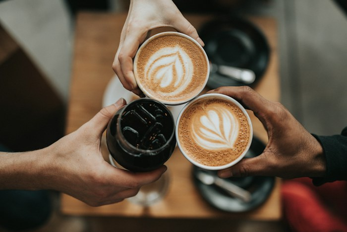

پیش از فنجان اول،
بیشتر بدان.
چند پاسخ روشن به سؤالهایی که ممکن است برایت پیش بیاید.

قرار در کافه
آیا میتوانم از سایت میز رزرو کنم؟+
در این نسخه رزرو آنلاین فعال نیست. صفحهٔ «برای یک قرار» فقط یک خلاصهٔ شخصی از برنامهٔ دیدارت میسازد. هیچ درخواستی برای کافه ارسال نمیشود و میزی تأیید یا نگه داشته نخواهد شد.
آدرس و ساعت کاری کجاست؟+
این سایت برای یک کافهٔ واقعی با نشانی مشخص ساخته نشده است. محل، ساعت کاری و اطلاعات تماس واقعی در زمان شخصیسازی در صفحهٔ تماس اضافه میشوند.
برای کار با لپتاپ یا قرار گروهی مناسب است؟+
در این نمونه، امکاناتی مثل وایفای، پریز، ظرفیت گروه و قوانین استفاده تأیید نشدهاند. بعد از مشخص شدن کافه، شرایط واقعی در این بخش درج میشود.
دربارهٔ سایت
تصاویر مربوط به کافهٔ واقعی هستند؟+
تصاویر از Unsplash برای نشان دادن فضای بصری پیشنهادی انتخاب شدهاند و به مکان یا محصولات یک کافهٔ مشخص اشاره ندارند.
اطلاعات من در سایت ذخیره میشود؟+
این نسخه حساب کاربری، پرداخت و فرم ارسال اطلاعات ندارد. جستوجو و برنامهریزی قرار در مرورگر انجام میشوند و به صاحب کافه ارسال نمیشوند. جزئیات بیشتر را در صفحهٔ حریم خصوصی ببین.